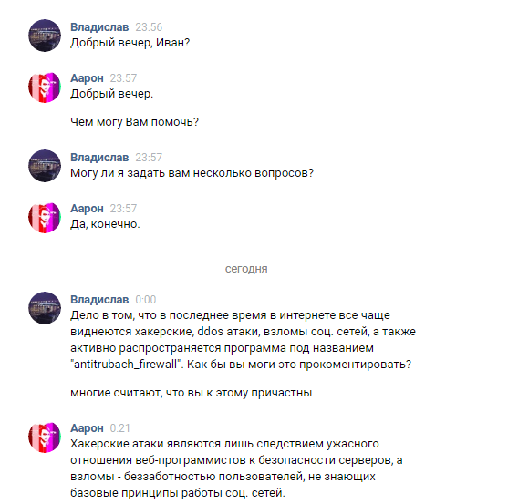
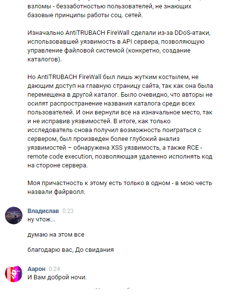

Множество людей впало в панику

И не только людей...

Сам же Иван отрицает свою вину, тем самым несет полнейший бред. Ниже
находится переписка нашего корреспондента, который так же является создателем
сайта.
 |  |
|---|
Президент Р.Ф. Владимир Владимирович Путин заявил “Ваня, если ты это сейчас
читаешь, зпомни. Я тебя найду!!! Я сделаю все, чтобы прекратить этот хаос”. Сейчас
Ивану грозит более 50 лет лишения свободы. Его местонахождение никому
неизвестно. Если у вас есть какая-либо информация о его местонахождении, просьба
сообщить полиции.
P.S. Если ты не из ми3, то тебе не понять жтот локальный мемчик, над которым я немало работал чтобы он получился
потрясным, так что поставь класс пожалуйста))))). Ах да и сори за большие картинки, 4 часа ночи как никак))).